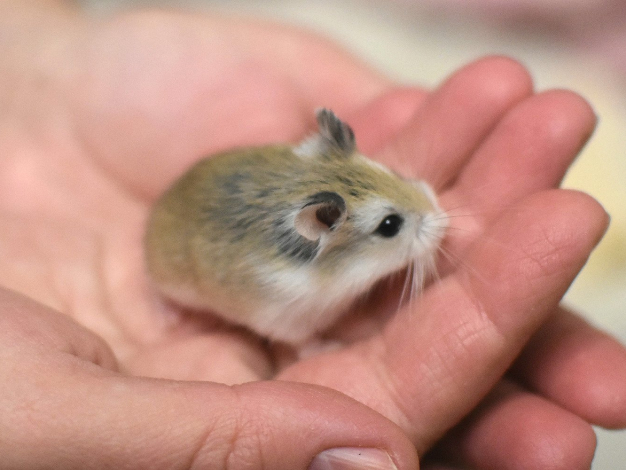
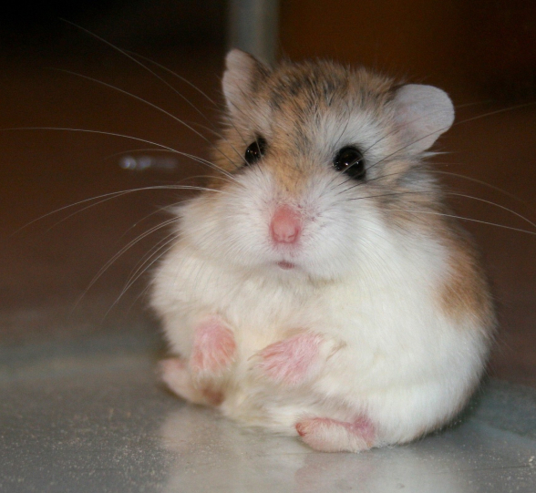
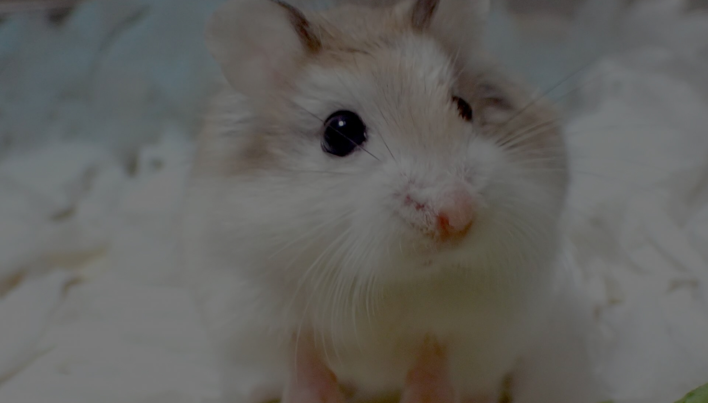

Особливості поведінки та характеру:
Хом'яки зазвичай спокійні, але якщо їх не ображати, люблять багато лазити по будинку/квартирі так що потрібно бути акуратними, щоб їх не задавити

Найбільш підходяща їжа
Найкращим раціоном для гризунів є зернова суміш та зелені корми – саме цим вони харчуються у природі. Як зерно підійдуть насіння пшениці, вівса, кукурудзи. Можна згодовувати хом'якам кавунове, гарбузове, соняшникове насіння, квасолю, горох. Нечасто, але можна давати волоський, кедровий горіх, кешью, арахіс.


Догляд та настави лікаря
Щоб хом’ячок відчував себе максимально комфортно, для початку його слід захистити від стресів. Викликати їх можуть різні зовнішні фактори, головним з яких є шум. Чуйні від природи, ці звірята дуже болісно реагують на будь-які звукові ефекти, будь то гучна музика або ж постійно хлопаючі двері. Щоб хом’ячок відчував себе спокійно, але й не відчував проблем зі здоров’ям, необхідно подбати про його правильне харчування.
Частіше розмовляйте з ним, хом'яків заспокоює людський голос, так він швидше звикне до голосу господаря та свого імені.